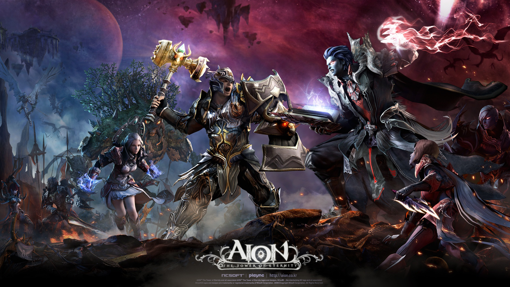
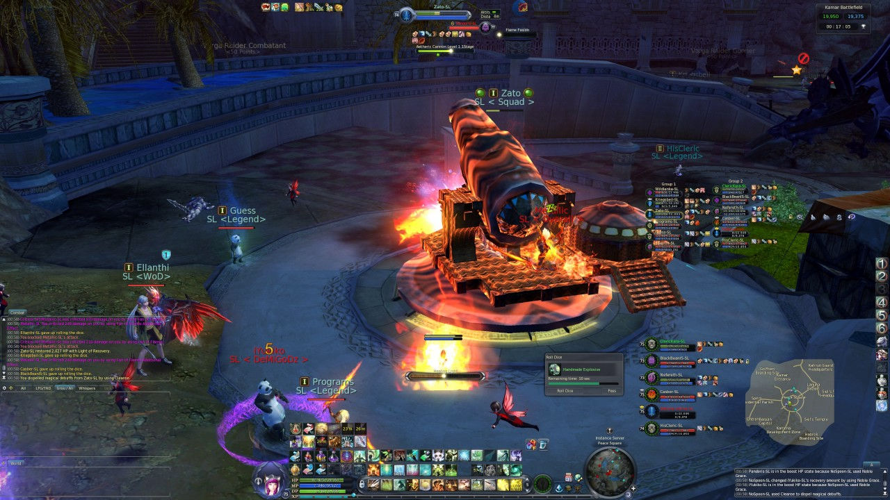
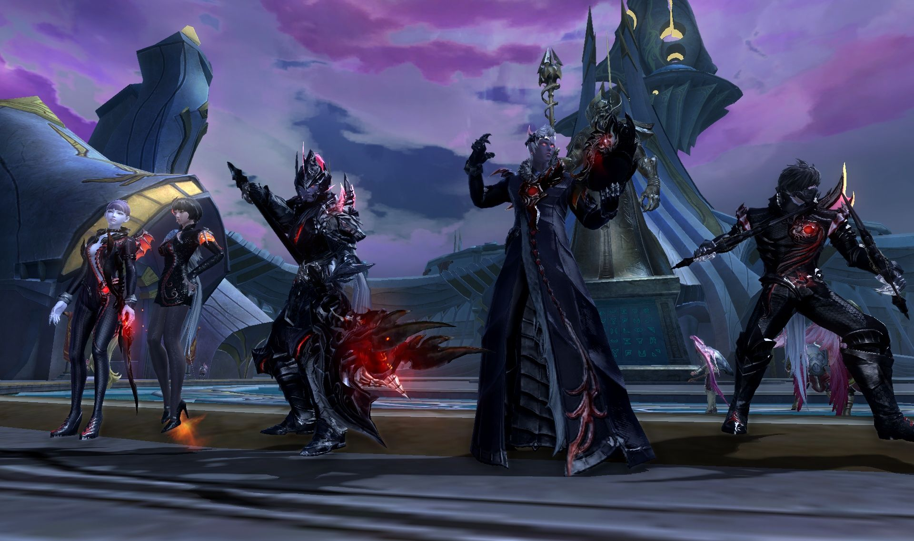
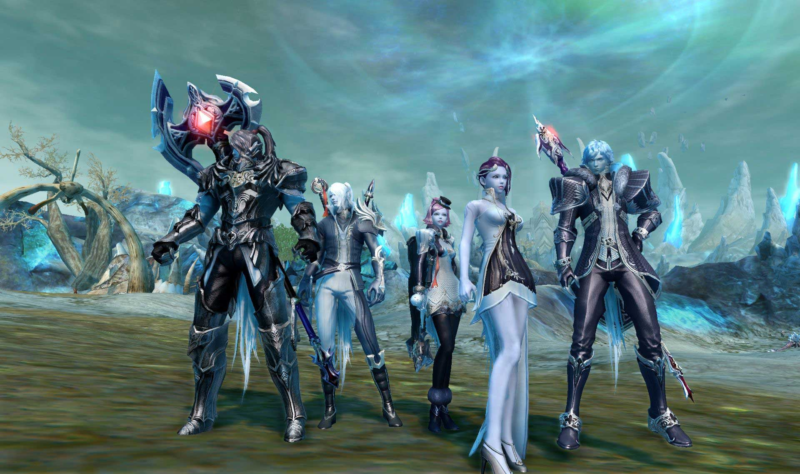
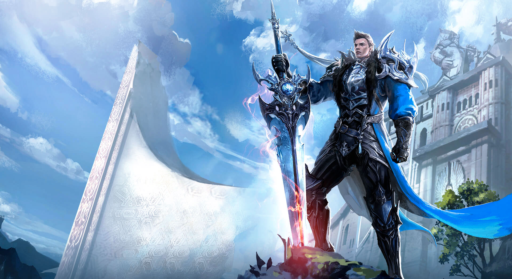
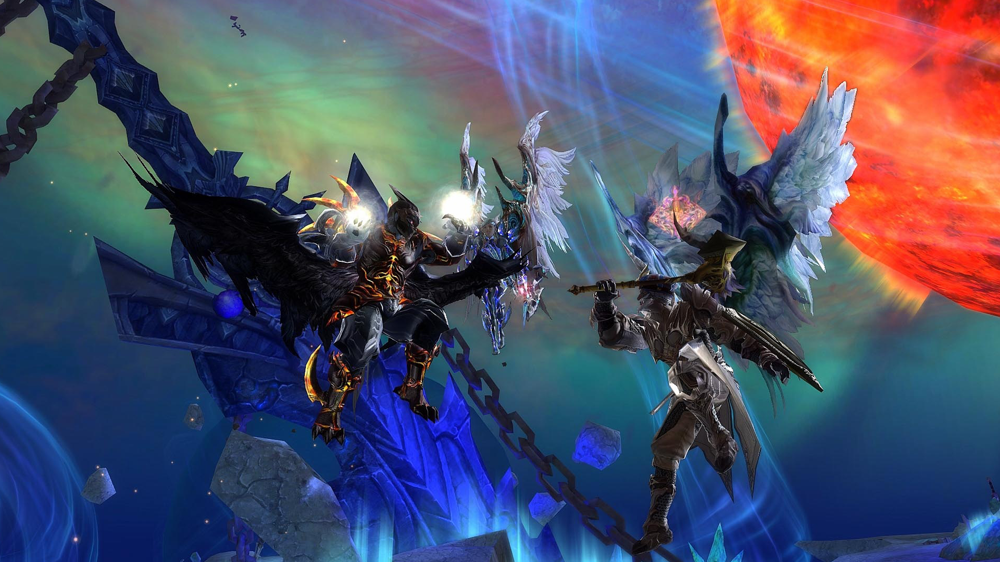

Aion
Aion: The Tower of Eternity is a massively multiplayer online role-playing game (MMORPG) released by NCSOFT. The game combines PvP and PvE (a concept the developers call PvPvE) in a fantasy game environment. As of May 20, 2009, Aion had 3.5 million subscribers in Asia. AION's first major expansion pack was released to North America and Europe on September 7, 2010 under the name AION: Assault on Balaurea. On February 29, 2012 AION changed its publisher in Europe while North American Truly Free launched on April 11, 2012 with no restrictions. Aion's second major expansion was released in North America on June 26, 2013 under the name "Aion: Dark Betrayal". Its most recent expansion was launched on July 13, 2016 under the name "Aion: Echoes of Eternity".

PvPvE system
The PvPvE gameplay of Aion revolves around battles within the Abyss and Balaurea (PvP zones). Within these zones are fortresses which can be controlled by individual Legions (the Aion equivalent of Guilds). Battle to control these castles involves combat against players of the opposing faction and computer controlled NPCs at the same time, using siege weapons obtained from PvE raid content. Legions in control of a castle are entitled to funding from taxes and players within the faction get specials from NPCs and discounts for travel and vendor items. The game currently does not allow factions to fight against those of their own race, except for casual duels or in the Arena, or Panesterra.
The participation in PvP is rewarded with Abyss Points in the game. The game ranks players as battles are won against fellow players based on their participation in the Abyss and Balaurea. Certain items can be purchased with these points such as high-end armor and weapons. This is referred to as the Abyss Rank system, and there can only be a limited number of high-ranking players per server. The highest-ranking players compete for the relatively few rank positions available.
In 4.5 patch, a new Glory Point system is introduced. It replaced the Abyss Point ranking system, turning Abyss Points into a currency to be spent instead of a factor defines players' rank. You can get these glory points from sieges or pvp and pve instances. Player cannot get these points from killing the opposite faction. Glory points are not usable as currency to buy new items, but they do decrease a certain amount daily, and the number of lost points depends on the players rank.
The participation in PvP is rewarded with Abyss Points in the game. The game ranks players as battles are won against fellow players based on their participation in the Abyss and Balaurea. Certain items can be purchased with these points such as high-end armor and weapons. This is referred to as the Abyss Rank system, and there can only be a limited number of high-ranking players per server. The highest-ranking players compete for the relatively few rank positions available.

Players of a very high rank are also granted the ability to transform into what is known as a Guardian General; a form that bestows an exceedingly large boost to certain stats. Abyss points are gained by killing other players in combat, and points are lost by being killed by another player. Higher points are awarded for a kill of a much higher ranked player than for killing an equal or lower ranked player. Abyss Points can also be earned by completing certain quests and by selling certain items.In 4.5 patch, a new Glory Point system is introduced. It replaced the Abyss Point ranking system, turning Abyss Points into a currency to be spent instead of a factor defines players' rank. You can get these glory points from sieges or pvp and pve instances. Player cannot get these points from killing the opposite faction. Glory points are not usable as currency to buy new items, but they do decrease a certain amount daily, and the number of lost points depends on the players rank.

Classes
There are six subclasses, and eleven main classes in the game. Players start the game by choosing one of the six primary classes: Warrior, Mage, Scout, Priest, Technist or Muse. After attaining level 10, the player must choose from two specialized classes associated with their chosen class (with the exception of Muse, which at the time can only ascend to a Songweaver). Warriors may become a Templar or a Gladiator; Mages may become a Sorcerer or Spiritmaster; Scouts may become an Assassin or Ranger; Priests may become a Cleric or a Chanter; Technists may become a Gunslinger or Aethertech; and a Muse will become a Songweaver or Vandal (as of the new update 7.0).

Grouping and crafting
Up to six players may form a group, to assist one another in battle, and share the benefits of victory. Certain areas are designed for group play and a group is required to enter some areas in the game. Up to four groups may form an Alliance for situations that call for greater force of numbers. Eight Alliances may combine to form a League, allowing for a total of 192 players participating in a given activity.
The base process involves learning a particular form of crafting, of which there are seven in Aion: weaponsmithing, armorsmithing, handcrafting, tailoring, alchemy, cooking, and construction. Players can learn all seven crafting professions, but can be an Expert in only two, and a Master in only one. Any item that can be crafted is actually composed of several individual components, or materials. The player can either learn which materials are needed for a particular item automatically or via purchase of the design. Generally these materials must be purchased from vendors or from other players, gathered out in the wild (via collection or extraction), crafted already, or morphed. Not everything can be crafted, however.
The base process involves learning a particular form of crafting, of which there are seven in Aion: weaponsmithing, armorsmithing, handcrafting, tailoring, alchemy, cooking, and construction. Players can learn all seven crafting professions, but can be an Expert in only two, and a Master in only one. Any item that can be crafted is actually composed of several individual components, or materials. The player can either learn which materials are needed for a particular item automatically or via purchase of the design. Generally these materials must be purchased from vendors or from other players, gathered out in the wild (via collection or extraction), crafted already, or morphed. Not everything can be crafted, however.

Flight, quests and mounts
There are many aspects to flight in Aion, which plays a vital role in Travel, Combat, Quests, and Crafting. Flying is only permitted in certain areas, known as flight zones. Flight is initially limited to 60 seconds but can be increased with various armor, titles, and other items in-game, especially wings, that can be obtained from level 10 on. A player may also use potions during flight which add to his or her remaining flight time, up to the current maximum. However, the most important aspect is gliding, which unlike actual flying is possible everywhere in the game (with very few exceptions) and allows to easily cross chasms or slopes that would otherwise block the player's path.
There are three type of quests in Aion: ordinary quests, campaign quests and Work Orders. Ordinary quests require the player to complete a task to receive a reward. Campaign quests are focused on story, and are crucial for player progression. Work Orders are used to increase skill in a chosen profession. Some quests are repeatable. Some quests, especially campaign quests, cannot be shared or abandonedю
Mounts can be obtained through world boss drops, quests, crafting, guestblooms, events and Cash Shop. When not in a fight, a player can mount to not only move faster by default, but also being able to sprint, which means moving at flight speed by also consuming the player's flight time. They can remain on their mount as long as they are not attacked by another player or monster. Mounts can be crafted with some difficulty, as the materials needed are hard to come by. NC West has sold materials to craft mounts on their real money store.
There are three type of quests in Aion: ordinary quests, campaign quests and Work Orders. Ordinary quests require the player to complete a task to receive a reward. Campaign quests are focused on story, and are crucial for player progression. Work Orders are used to increase skill in a chosen profession. Some quests are repeatable. Some quests, especially campaign quests, cannot be shared or abandonedю
Mounts can be obtained through world boss drops, quests, crafting, guestblooms, events and Cash Shop. When not in a fight, a player can mount to not only move faster by default, but also being able to sprint, which means moving at flight speed by also consuming the player's flight time. They can remain on their mount as long as they are not attacked by another player or monster. Mounts can be crafted with some difficulty, as the materials needed are hard to come by. NC West has sold materials to craft mounts on their real money store.
Gameplay Trailer